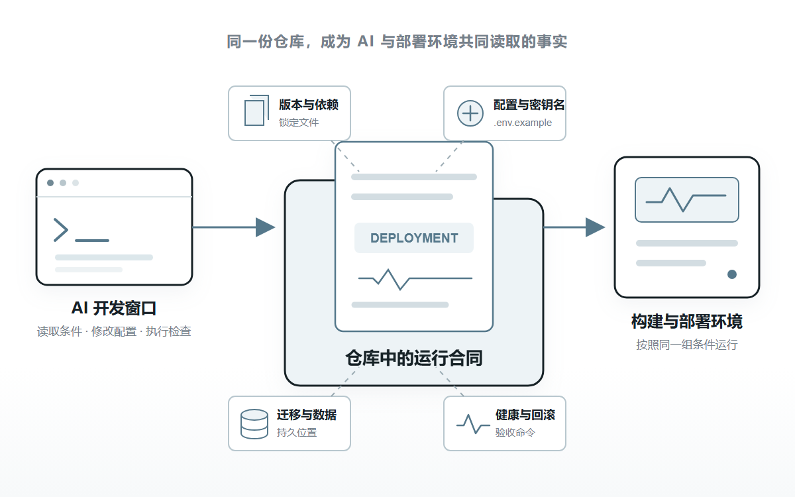
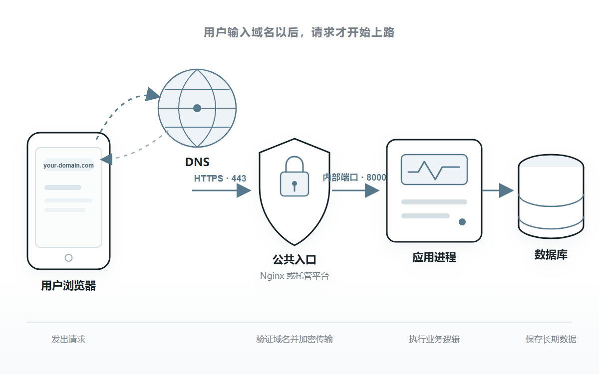
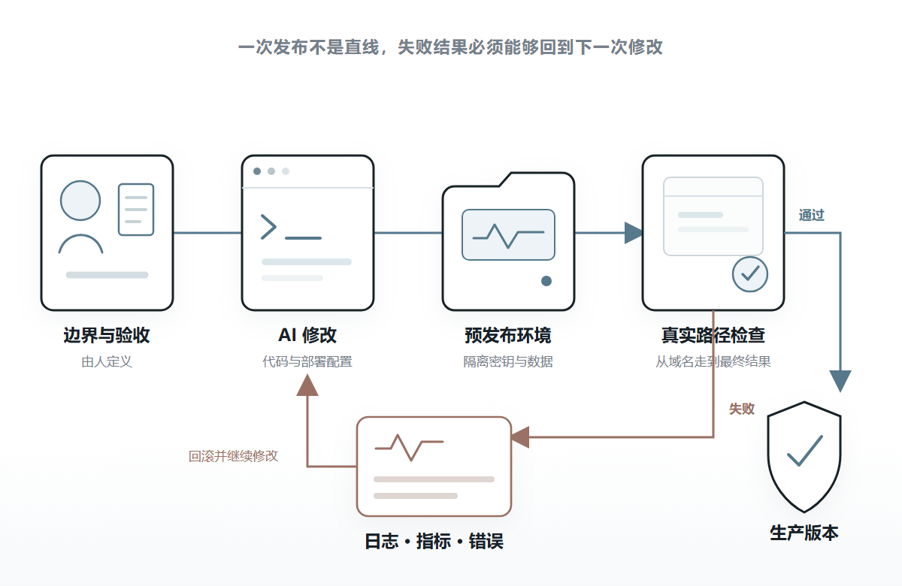

AI 写的项目，
怎么部署到网上给别人用？
2026 年 8 月 25 日 · AI 时代的基建 · 刘志宇 Joy
很多人用 AI 做完项目，最后会补一句：帮我部署到网上。
几分钟后，仓库里多出一个 Dockerfile、一份 Nginx 配置和一份容器编排文件。AI 解释了每条命令，最后告诉你现在已经可以上线。
这些文件可能都没有语法错误，项目也可能真的启动了。
危险恰恰在这里。
一个纯静态页面，可能被套上数据库、缓存和五个容器。一个会保存用户文件的应用，也可能被放进随时重建的临时磁盘。模型密钥可能进了前端，健康检查可能只证明进程还活着，数据库却已经无法连接。
AI 不是故意把项目变复杂。它只是在补全没有写出来的部分。
它不知道哪些数据绝对不能丢，哪些端口可以公开，服务允许中断多久，发布失败以后要退回哪一版。它只能选择训练数据里最常见、看起来最完整的答案。
AI 时代的部署，不是让 AI 多生成几份配置，而是把运行条件、权限边界和成功证据，变成它能够读取、执行和验证的系统。
这套系统不必复杂。一个普通项目也可以从很小的结构开始。
01
AI 最擅长补全，部署最怕默认值
写页面时，AI 猜错一个颜色或间距，通常很快就能发现。
部署配置不同。
端口是否暴露、数据写在哪里、密钥由谁读取、数据库迁移什么时候执行，这些决定很多都藏在页面背后。配置看起来完整，不代表它满足当前项目的真实条件。
比如，把模型 API 密钥写进前端环境变量，代码仍然能够构建，页面也能调用模型。但前端代码最终会进入用户的浏览器，密钥仍然可以被提取。
再比如，AI 把上传文件写进应用目录。本地测试没有问题，第一次重新部署以后，平台重建运行环境，用户文件才一起消失。
这类错误很难靠一句生成生产级配置避免。
生产级不是一种固定模板。它取决于数据价值、故障影响、部署环境和维护能力。
OpenAI 在 2026 年发布的工程实践里，把 AI 参与开发以后人的工作概括为设计环境、表达意图和建立反馈回路。人没有从工程里消失，只是从逐行写代码，移动到了定义边界和验证结果这一层。
对第一次部署来说，这意味着先回答几个不会由代码自动给出的事实。
项目是纯静态页面，还是需要后端进程？哪些内容需要长期保存？生产密钥允许谁使用？一次发布失败以后，能不能接受停机和数据回退？
这些答案确定以后，AI 才有足够信息选择部署方式。
AI 可以负责实现部署，人仍然要拥有运行边界和成功标准。
02
先把 localhost 写成一份运行合同
http://localhost:3000 只说明一件事：当前电脑里有一个进程，正在 3000 端口等待请求。
localhost 永远指向访问者自己的电脑。终端关闭，进程结束，这个地址后面就没有应用了。
要让另一台设备访问，程序需要换到一套持续联网的运行环境里。
问题是，下一次 AI 会话怎样知道这套环境需要什么？
只靠聊天记录不够。窗口会关闭，对话会压缩，新会话也没有参与以前的决定。
更稳定的做法，是把应用怎样运行写回仓库。
可以把这组信息理解成一份运行合同。它不是一种新的行业格式，也不必写成几十页部署手册，而是由几份短文档和可执行文件共同组成。
运行时版本进入 .node-version、.python-version 或容器基础镜像；依赖进入锁定文件；需要的配置名称进入 .env.example；数据库变化进入迁移脚本；构建、启动和检查命令进入自动化流水线或部署配置。
仓库还应该明确服务监听哪个端口，健康检查访问哪个地址，持久数据保存在哪里，发布失败怎样回到上一份已经验证的构建。
真正的运行合同，不是描述系统应该怎样工作，而是让缺少任何条件时，构建或验收能够直接失败。
OpenAI 的工程团队曾尝试把所有说明都塞进一份巨大的 AGENTS.md，后来发现内容会迅速过期，也很难机械验证。最后他们让短说明只负责提供地图，把架构、可靠性、安全和运行规则分别保存在仓库中，再用检查工具维持一致。
这对小项目同样成立。
AI 不需要一本百科全书。它需要一个短入口，能够继续找到当前任务真正相关的版本、命令、边界和验收方式。

图 1 · 运行合同把散落在对话和记忆里的条件，变成仓库中的可执行事实
03
先确定最小路径，再决定用什么组件
有了运行合同，下一步不是立刻选择 Docker 或 Nginx，而是先看用户的一次请求要经过哪里。
如果项目构建以后只剩 HTML、CSS、JavaScript 和图片，它是静态网站。文件进入静态托管，域名指向托管入口，通常就能完成第一次公开部署。
但只要项目需要登录、保存数据、调用不能暴露密钥的模型接口，或者执行浏览器无法承担的任务，它就需要后端。
这时最小路径通常是：用户输入域名，DNS 找到公开入口，HTTPS 保护连接，入口把请求交给应用端口，应用再读取数据库或对象存储。

图 2 · 用户访问域名后，请求经过 DNS、HTTPS 入口和应用端口到达数据
Nginx 负责请求怎样进来。Docker 负责应用怎样被打包和运行。两者解决的不是同一件事，也都不是部署的必选按钮。
如果托管平台已经负责构建、HTTPS、请求入口和进程重启，小项目可以不维护这两层。
如果自己管理服务器，或者应用依赖系统软件、需要在不同机器上重复建立环境，Docker 会更有价值。同一台服务器运行多个服务，需要统一处理域名、证书和内部端口时，Nginx 才更自然。
这里真正需要固定的不是组件名称，而是谁负责每一层。
域名由谁解析，证书由谁续期，进程退出由谁拉起，数据库由谁备份，用户文件写到哪里。任何一项没有负责人，AI 生成再完整的配置也只是把空白藏了起来。
04
AI 不应该第一次就拿到生产环境
AI 可以快速修改配置，也能快速执行一条错误命令。
因此开发环境、预发布环境和生产环境不应该只靠名字区分。
它们需要真正不同的权限、密钥和数据。
开发环境可以使用本地数据库和测试密钥。预发布环境使用与生产相近的结构，但连接独立数据。生产环境只允许通过受控流程发布，不能让一次普通调试直接拿到全部凭据。
这不是因为 AI 一定会犯错，而是任何自动化系统都应该只获得完成当前任务所需的最小权限。
GitHub 的部署环境就提供了这种边界：特定分支才能部署，环境密钥在通过保护规则后才进入任务，也可以要求人工批准。
普通个人项目不一定要照搬整套流程，但可以保留同样的结构。
AI 可以在独立分支和预发布地址里反复构建、迁移测试数据、打开页面和检查日志。只有已经通过验收的构建，才获得进入生产环境的机会。
生产密钥也不必先交给 AI，再要求它小心使用。部署平台可以在执行时注入密钥，AI 只知道需要哪些变量，不读取真实值。
权限边界的作用不是提醒 AI 别做错，而是让错误发生时也到不了边界之外。
05
没有反馈，AI 只能把猜测写得更像答案
很多部署流程停在容器已经启动或健康检查返回 200。
这只能证明某个进程愿意响应检查，不能证明用户真的能够完成一次操作。
数据库可能连不上，模型密钥可能无效，后台任务可能没有启动。应用仍然可以返回一个绿色的健康状态。
更可靠的反馈至少有三层。
最里面是进程检查，确认服务已经启动。中间是依赖检查，确认数据库、存储和必要的外部服务可以连接。最外面是真实路径检查，从公开域名发起一次最小操作，并验证最后的数据或文件确实产生。
发生错误以后，还需要留下足够线索。
日志至少要带时间、代码版本、请求标识、处理阶段和明确的错误原因，同时避开密钥与用户敏感内容。请求量、错误率和响应时间形成指标；服务变多以后，调用链可以记录一次请求经过了哪些组件。
OpenTelemetry 将日志、指标和调用链归为理解系统状态的观测信号。对 AI 来说，它们还有另一层意义：这是模型能够读取的线上反馈。
OpenAI 的工程实践把浏览器、日志、指标和调用链直接接进 AI 的工作环境。于是低于某个启动时间、关键路径没有超时这类目标，不再依赖人截一张图描述，而能由 AI 查询和验证。
Anthropic 在长任务执行环境研究中也发现，让外部检查者按照明确标准评价结果，比要求生成者自己保持怀疑更容易稳定。
这个方法不需要从安装一套庞大的监控平台开始。
第一版只要能够读取部署日志、识别当前运行版本，并通过一个脚本走完关键用户路径，AI 就已经从猜测线上发生了什么，变成可以依据反馈继续修改。

图 3 · 人定义边界与验收，AI 在构建、部署、观察和回滚之间形成闭环
06
完成必须变成可以推翻的证据
部署完成不能只由执行部署的 AI 宣布。
它需要一组外部能够重复验证的结果。
公网可达。 开发者电脑关机以后，另一部手机使用移动网络仍然能够通过正式域名访问。
能够恢复。 主动结束应用进程或重启运行环境，服务能够自动回来，而不是依靠开发者重新打开终端。
数据持久。 创建一条测试数据并重新部署应用，数据仍然存在；用户上传的文件也没有跟随运行环境一起重建。
密钥不外泄。 前端构建产物、公开仓库和普通日志里找不到生产凭据，浏览器只能调用后端允许的接口。
版本可确认。 日志或版本接口能够说明生产环境正在运行哪次代码，而不是只看到几个绿色进程。
失败可回退。 部署一份无法通过关键路径检查的构建，发布流程会停止，或者恢复上一份已经验证的版本。
备份能恢复。 备份任务显示成功还不够，至少要实际恢复过一份测试数据，知道文件存在，也知道恢复步骤仍然有效。
这些验收不必在第一天全部自动化。
但每一项都必须有可观察结果。只要仍然只能回答应该没问题，它就还没有成为 AI 能够执行的工程规则。
AI 时代的完成，不是一段可信的解释，而是一组别人可以重复执行、也可以推翻的证据。
07
一个普通项目怎样最小落地
把上面的方法压回一个普通 AI 项目，第一版并不需要很多基础设施。
项目先在仓库里固定运行版本、依赖、构建命令、启动命令、环境变量名称、迁移方式和健康检查。AI 每次修改部署之前，都从这些事实开始，而不是重新猜一遍技术栈。
纯静态页面进入静态托管。带后端的项目可以先使用成熟托管平台，再接一套托管数据库；确实有用户上传文件时，增加对象存储。
每个代码分支先生成一个预发布地址。AI 在那里打开页面、调用接口、执行一条真实业务路径并读取日志。通过以后，同一份构建再进入生产，而不是在生产机器上重新手工拼一次环境。
生产发布完成后，流程记录代码版本，执行公网检查。失败时停止发布或退回上一版，错误信号再进入下一次 AI 修改。
如果以后迁移到自己管理的服务器，Docker、Nginx 和进程管理器可能加入结构。但运行合同、环境边界和验收脚本不需要重写，它们描述的是应用需要什么，不是某个平台的按钮在哪里。
如果服务在中国境内对外提供互联网信息服务，还要把备案和可能的业务资质放进上线计划。工信部门的办事指南说明，境内非经营性互联网信息服务实行备案制度，经营性服务实行许可制度，部分内容还涉及前置审批。
这一阶段通常不需要 Kubernetes、微服务、消息队列和一组缓存服务器。
增加组件不会让 AI 自动理解系统，只会增加它需要部署、观察和排查的对象。
当一个新的 AI 会话进入仓库，它能够找到怎样构建、怎样运行、哪些权限不可越过、怎样证明部署成功；当线上结果不符合预期，它能够读取证据并回到上一份稳定构建，这个项目才真正拥有了 AI 时代的部署能力。
AI 生成代码和配置的成本已经很低。稀缺的是清楚的边界，以及能够证明结果的反馈。
— 完 —
#AI开发 #项目部署 #AI时代的基建
本文讨论普通 AI 项目第一次公开部署时，怎样建立运行合同、权限边界、反馈闭环与验收证据；不把 Docker、Nginx 或自建服务器视为所有项目的必选项。资料核对时间：2026-08-25。
参考资料
· OpenAI｜Harness engineering: leveraging Codex in an agent-first world
https://openai.com/index/harness-engineering/
· Anthropic｜Harness design for long-running application development
https://www.anthropic.com/engineering/harness-design-long-running-apps
· RFC Editor｜RFC 6761: Special-Use Domain Names
https://www.rfc-editor.org/info/rfc6761/
· MDN｜How the web works
https://developer.mozilla.org/en-US/docs/Learn_web_development/Getting_started/Web_standards/How_the_web_works
· The Twelve-Factor App｜Port binding
https://12factor.net/port-binding
· The Twelve-Factor App｜Config
https://12factor.net/config
· The Twelve-Factor App｜Build, release, run
https://12factor.net/build-release-run
· GitHub Docs｜Deployments and environments
https://docs.github.com/en/actions/reference/workflows-and-actions/deployments-and-environments
· OpenTelemetry｜Observability primer
https://opentelemetry.io/docs/concepts/observability-primer/
· NGINX｜Reverse Proxy
https://docs.nginx.com/nginx/admin-guide/web-server/reverse-proxy
· Docker｜What is an image?
https://docs.docker.com/get-started/docker-concepts/the-basics/what-is-an-image/
· OWASP｜Secrets Management Cheat Sheet
https://cheatsheetseries.owasp.org/cheatsheets/Secrets_Management_Cheat_Sheet.html
· 工业和信息化部｜互联网信息服务备案审批服务指南
https://hunca.miit.gov.cn/bsfw/bszn/art/2024/art_7ef0d8bd3b0d433ba4b9b277f883f74d.html